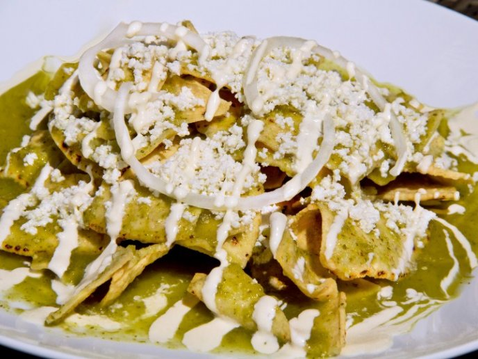

Chilaquiles

Los Chilaquiles son la comida más rica creada por el hombre, son totopos cubiertos con salsa verde que se pueden acompañar con pollo, queso, crema y frijoles.
Ingredientes
- Salsa verde
- Totopos de maíz
- Pollo
- Servir totopos en un plato
- Agregar pollo encima
- Vertir la salsa caliente
- Acompañar con queso, crema y frijoles al gusto